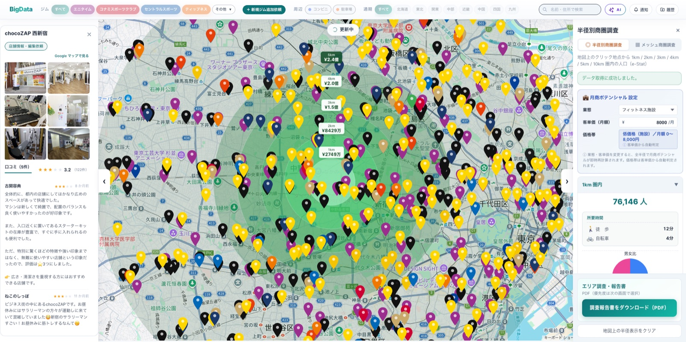
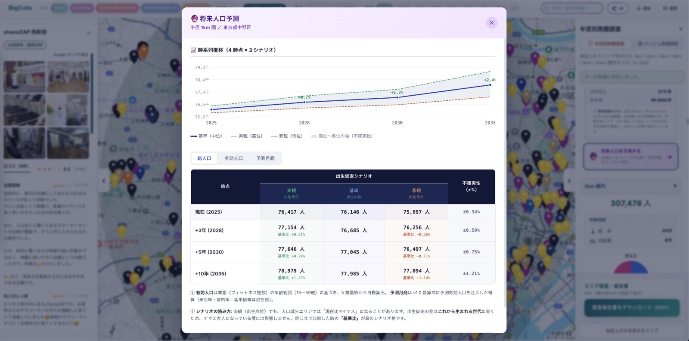

作品一覧へ戻る
フィットネス業界向け 立地分析・商圏調査マップシステム
全国のフィットネス施設を地図上に可視化し、e-Stat の人口統計と組み合わせて商圏分析・立地検討を支援する AI 検索機能付き Web システム。技術選定から一貫担当。


概要
全国のフィットネス施設を地図上に可視化し、e-Stat の人口統計と組み合わせて商圏分析・立地検討を支援する Web システム。 ユーザー向けフロント（Vue 3）と管理画面・API（Laravel 12）の 2 アプリケーション構成で、技術スタック選定からフロント・バックエンド・インフラまで一貫して担当しています。
技術的課題
- 自然言語の検索入力を OpenAI で意図 JSON 化し、施設 DB・e-Stat 人口統計（メッシュ・行政区域）・設備条件を連携させる複合検索フローの設計
- 地図上での大量施設表示の負荷対策と、e-Stat API のメッシュコード算出・バッチ取得による API コール数の抑制
- プラン別（standard / premium）の API 機能制御と、管理画面・ユーザー API の認証方式の分離
主な担当
- Vue 3 + TypeScript + Google Maps JS API による地図 UI、半径別人口集計・月商ポテンシャル算出、調査報告書の PDF 生成（html2canvas / jsPDF）を実装
- Laravel 12 による API 設計（Repository 層）。施設 CRUD・CSV インポート・ジオコーディング・周辺施設情報 API を提供
- OpenAI Chat Completions と e-Stat REST 3.0 を組み合わせた AI アシスタント（意図解析→データ取得→回答生成）をサーバー側オーケストレーターとして設計・実装
- Twig + Tailwind CSS 4 + Alpine.js による管理画面（施設・ユーザー・修正申請・レポート分析）の構築
- GitHub Actions から EC2 / Nginx への自動デプロイ（CI/CD）を構成
成果
- 約 12 万件の施設データを扱う分析基盤を構築
- 現在ステージング環境で検証中（リリース準備段階）